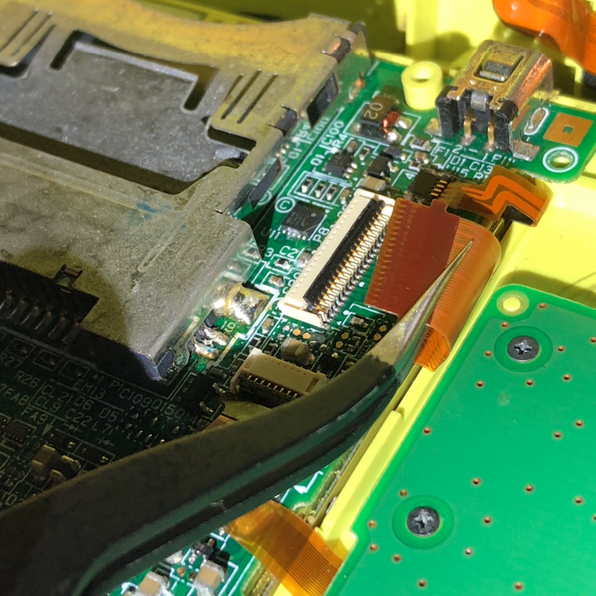

Description
The bottom screen is white and does not display anything.May be caused by the bottom screen's data cable being damaged or disconnected.
Solution
First try reseating the data ribbon cable.
If your reseating did not fix the screen, you will have to replace your bottom screen. Try the guides for DSi and DSi XL on ifixit.